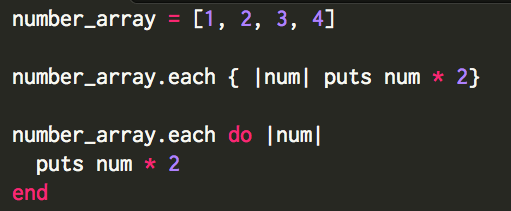
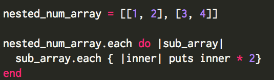

Iterating Through Arrays and Nest Arrays using .each
March 13, 2016
Iterating through objects (arrays and hashes) is one of the main cornerstones of Ruby. As such, I have provided examples below to iterate through a single array and nested arrays using the .each method. The .each method iterates through each item in the array and performs a specific task. Additional enumerable methods such as slice or each_with_index can also be used to make the iteration more complex. These examples are an excellent cheat sheet when looking to iterate through loops.
The example below is iterating through an array of numbers:
The example below is iterating through a nested array:
